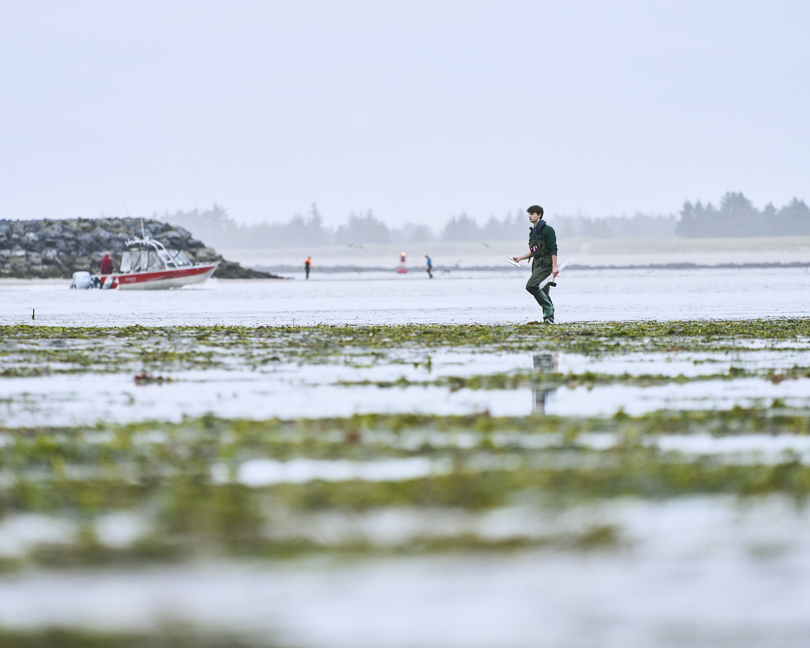
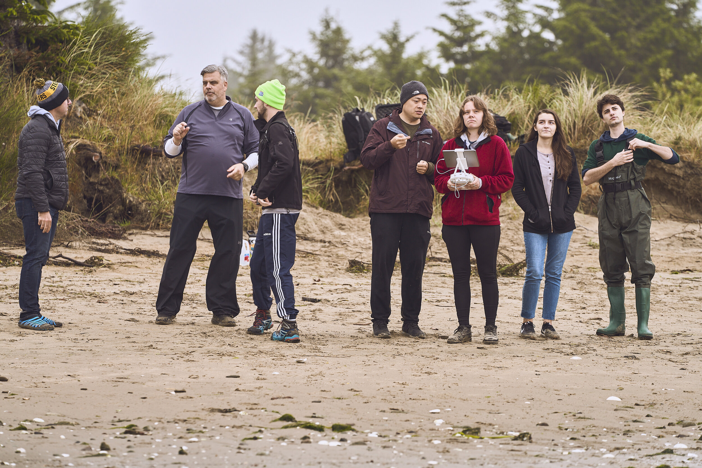
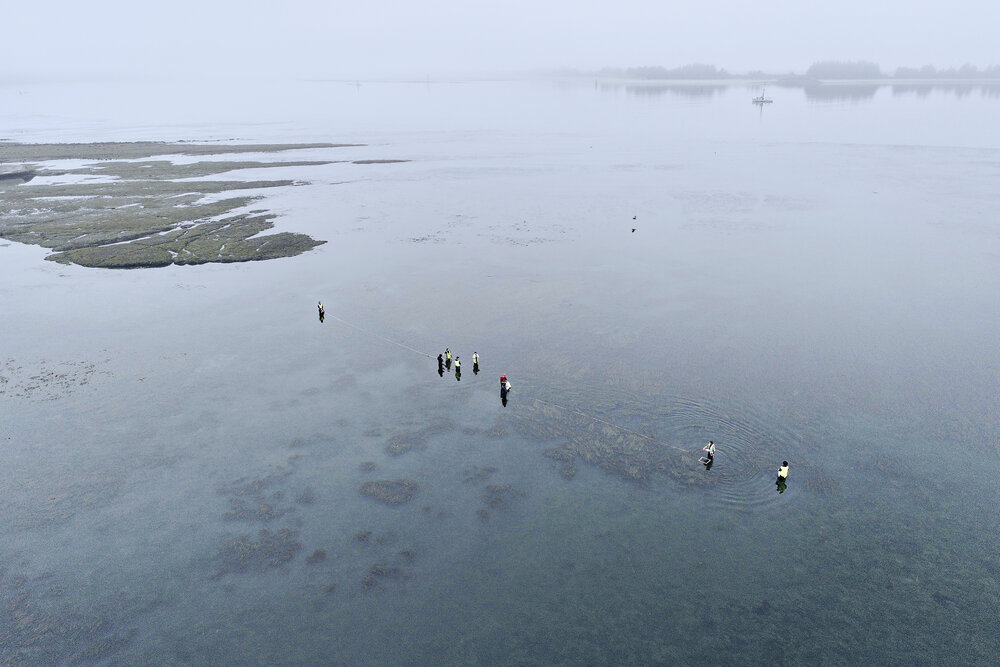

3 minutes read
The 4:30 AM alarm sounded, prompting the first day of data collection for the 2021 year for the NSF Smithsonian project studying eelgrass and wasting disease along the Pacific coast. After multiple flights and road trips through the Oregon landscape, the Citizen Science GIS at UCF team led by Dr. Tim Hawthorne and Dr. Bo Yang arrived in the town of Coos Bay, Oregon, 3000 miles from their home lab.
A duffel bag was filled with waders along with the two large cases carrying the primary means of data collection from the UCF team, their Phantom 4 UAVs (Unmanned Aerial Vehicles), commonly known as drones. One of the systems incorporated a multispectral sensor capable of capturing NIR (Near-Infrared) imagery allowing for more meticulous analysis of the eelgrass beds.

UCF undergraduate student, Sam Baker, assists Oregon State University researchers with field sampling and determining transect locations.
The team split into two groups. One group went into the site to set up two tarps used to determine reflectance values for correction as well as assist the Oregon State biologists in their data collection. The other group stayed ashore to pilot the drone and maintain FAA Part 107 standard procedures for UAV operations.
The Citizen Science GIS at UCF team consisted of associate professor, Dr. Hawthorne, post-doctorate, Dr. Yang, graduate research assistant, Tyler Copeland, and three undergraduate research students, Alex Stovall, Sam Baker, and Gabby McClinton, and RET teacher Olech "Andy" Andrij Bula. Andy is a physics teacher at Astronaut High School in Central Florida who applied to join the project through our NSF RET (Research Experience for Teachers) program.
"The Fieldwork Was Inspiring After A Year And A Half Of Being Sidelined By COVID-19. Our Interdisciplinary Team Was Ready! We Came Together Quickly To Map These Important Coastal Habitats. The Imagery Provides A High Resolution View Of These Changing Ecosystems To Support A Longitudinal Study Of The Field Sites. It Was Great To See Our Students In The Field For The First Time Together Work So Efficiently And Enthusiastically Toward Our Project Goals." Dr. Tim Hawthorne

UCF students and faculty collect drone imagery and ponder ideas for current and future projects.
Fittingly, a team of multiple backgrounds is involved in a project of multiple scopes. One that intermixes microbiological themes, environmental themes, and social themes. At its core, the research entails how wasting disease affects eelgrass in multiple areas along the Pacific coast. Underlying goals focus on involving community members and partners on drone flight, GIS training, and data processing. To read more about the NSF Smithsonian Eelgrass project, view the project page here.
The team heads next to Washington to continue drone mapping with Cornell University and University of Washington Friday Harbor Lab. Stay tuned for our continued adventures as we support fieldwork and science through our collaborative NSF grant.

Updated: July 04, 2021